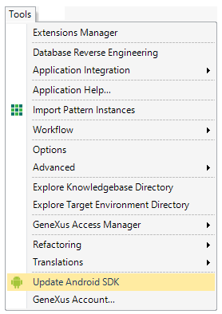
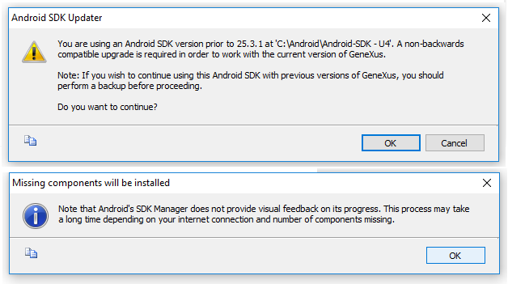
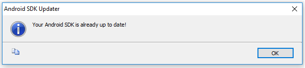

GeneXus provides a tool option for updating the Android-SDK component. In order to execute this option, an Android-SDK installation must exist on your machine and the Android SDK Directory property must indicate where it is located. The complete process consists of three simple steps. Warning: If you are using multiple GeneXus upgrades and you need to upgrade Android-SDK, it is highly recommended you back-up the previous Android-SDK directory for previous GeneXus upgrade. Android-SDK may include not backward-compatible changes.
Step 1 - Execute the update from GeneXusGo to Tools > Update Android SDK. This option is visible only when the Knowledge Base has enabled the Smart Device Generator.  Step 2 - Read the recommendations and conditionsA warning dialog will be displayed alerting the user that the process is non-backward-compatible and the Android SDK Directory will be overwritten (property closely associated with the Knowledge Base and the Environment). We strongly recommend backing up this directory before starting the process. In case that we accept the conditions, an informational dialog will be displayed advising that the process won't provide visual feedback and may take a long time.  Step 3 - Accept the Licence Agreements by GoogleA terminal will be opened, and Google forces us to accept two Licence Agreements (one for android-sdk-license and another for intel-android-extra-licence). When the command-line tool displays "Accept? (y/N): ", the user must write a "y" and press "Enter" in order to continue with the update process. This process may take a long time, but once it has finished, a dialog will be displayed advising the success of the operation.  Warning: HAXM component must be executed manually. Refer to Android Requirements, "Installation Process" section, step 3.
AvailabilityThis tool option is available as of GeneXus 15 Upgrade 5.
|
| Backlinks | |
| Android - FAQ and Common Issues | Android Requirements |